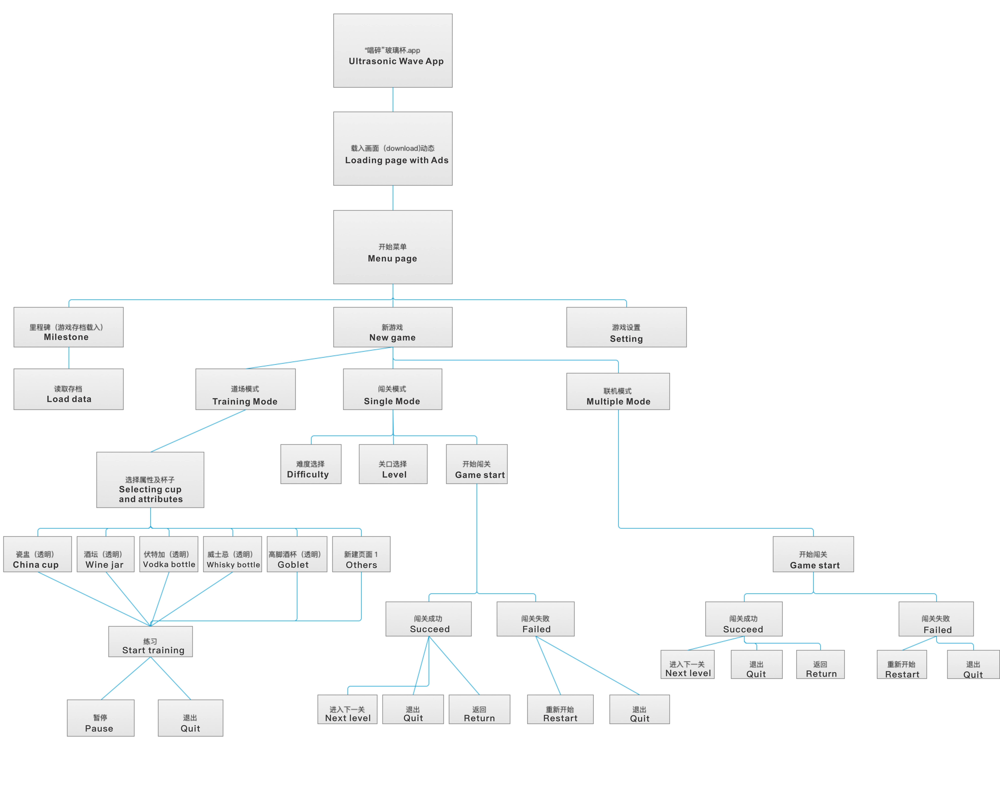
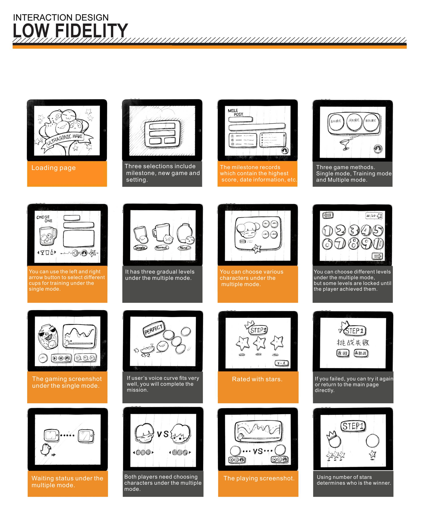

Ultrasonic Wave
Co-workers :Yinbo Chen, Jiyang Li, Xiaoman Wang
Ultrasonic Wave is a kind of immersive game for iPad. The interactive processes bases on the level of input which acquires from the mic of iPad. Player uses their voice level to control the game. The level of the voice displays as a parameter which is shown as a smooth curve to match the ups and downs of hills in each of game maps. It automatically records the input curve and checks the matching rate which bases on the preprogrammed checking method. Then, it will show the scores via the number of stars.
This application can reduce user’s anxiety. User also can use this application for voice training and vocal cord rehabilitation.
Game Flow Chart

Low Fidelity

High Fidelity